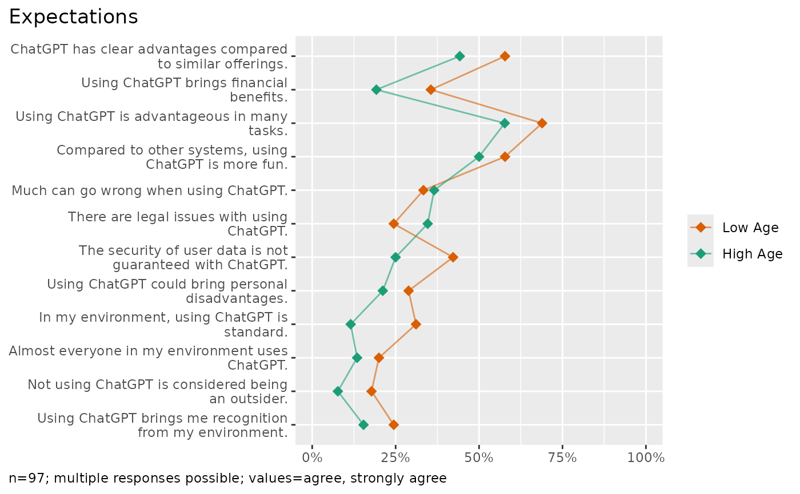
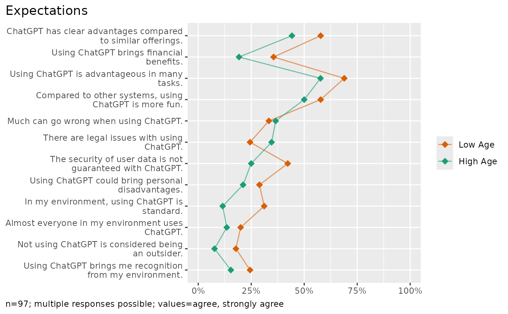

Plot percent shares of multiple items compared by a metric variable split into groups
Source:R/plots.R
plot_counts_items_cor.RdPlot percent shares of multiple items compared by a metric variable split into groups
Usage
plot_counts_items_cor(
data,
cols,
cross,
category = NULL,
title = TRUE,
labels = TRUE,
clean = TRUE,
...
)Arguments
- data
A tibble containing item measures.
- cols
Tidyselect item variables (e.g. starts_with...).
- cross
A metric column that will be split into groups at the median.
- category
Summarizing multiple items (the cols parameter) by group requires a focus category. By default, for logical column types, only TRUE values are counted. For other column types, the first category is counted. To override the default behavior, provide a vector of values in the dataset or labels from the codebook.
- title
If TRUE (default) shows a plot title derived from the column labels. Disable the title with FALSE or provide a custom title as character value.
- labels
If TRUE (default) extracts labels from the attributes, see codebook.
- clean
Prepare data by data_clean.
- ...
Placeholder to allow calling the method with unused parameters from plot_counts.
Examples
library(volker)
data <- volker::chatgpt
plot_counts_items_cor(
data, starts_with("cg_adoption_"), sd_age,
category=c("agree","strongly agree")
)
 #> In the plot, 4 missing case(s) omitted.
plot_counts_items_cor(
data, starts_with("cg_adoption_"), sd_age,
category=c(4,5)
)

#> In the plot, 4 missing case(s) omitted.
#> In the plot, 4 missing case(s) omitted.
plot_counts_items_cor(
data, starts_with("cg_adoption_"), sd_age,
category=c(4,5)
)

#> In the plot, 4 missing case(s) omitted.